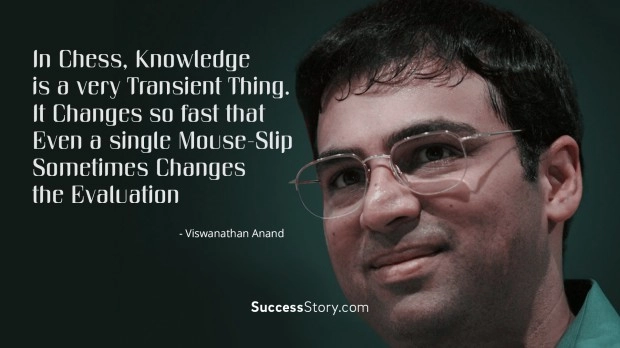

"fastText as a library for efficient learning of word representations and sentence classification. It is written in C++ and supports multiprocessing during training. FastText allows you to train supervised and unsupervised representations of words and sentences. These representations (embeddings) can be used for numerous applications from data compression, as features into additional models, for candidate selection, or as initializers for transfer learning.
FastText supports training continuous bag of words (CBOW) or Skip-gram models using negative sampling, softmax or hierarchical softmax loss functions. I have primarily used fastText for training semantic embeddings for a corpus of size in the order of tens millions, and am happy with how it has performed and scaled for this task. I had a hard time finding documentation beyond the documentation for getting started, so in this post I am going to walk you through the internals of fastText and how it works. An understanding of how the word2vec models work is expected. This post by Chris McCormick does a great job of explaining it."